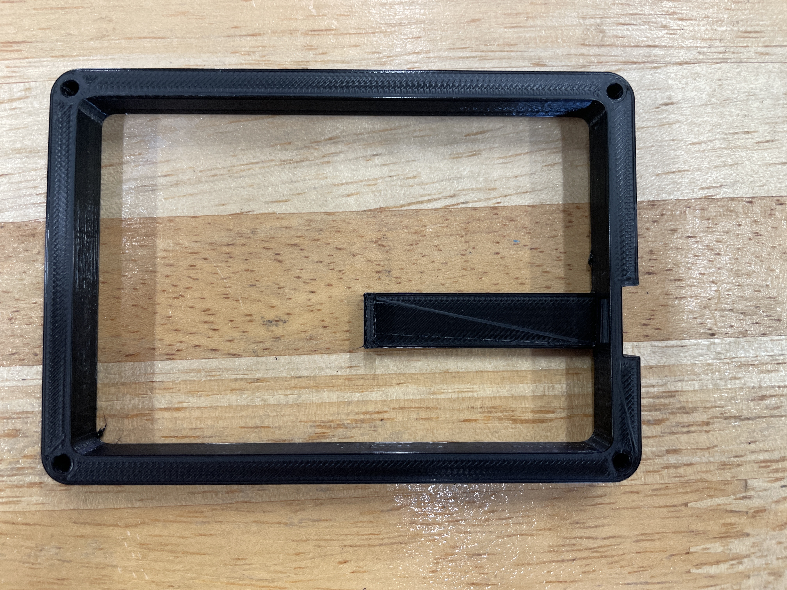
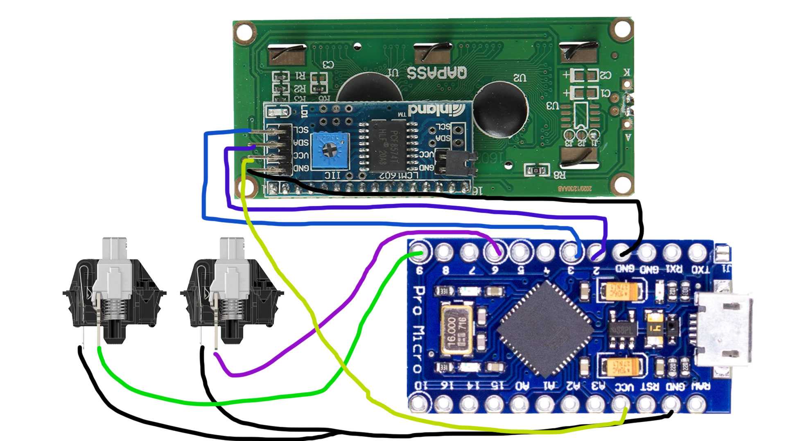

Final Project
In this section, I will be documenting the process of my final project for the module. For this project, I wanted to create something that would meet the requirements of this project and also help benefit me with my gaming experience. As such, i decided to create an Osu! 2-mechanical switch keypad. However, many of such products already exist out in the market, therefore i wanted to add in another fucntion to it, which is to add a clicks per second counter and have it display on a lcd screen above the keypad.
Bill of materials
| Item: | Quantity |
|---|---|
| Arduino Pro Micro | 1 |
| Cherry MX Speedsilver Mechanical Switches | 2 |
| I2C LCD Screen | 1 |
| White Acrylic Sheet | 1 |
Prototyping Phase
One of the earlier problems that was identified was how to place the LCD screen in a position so that it would not affect the wiring of the switches and the LCD screen itself, while giving ample space for the switch to be placed in a comfortable spot.
The solution thought up for this was to design the keypad in "levels" of acrylic plating so that if more space were needed, another plate can just be added in between.
Another problem was how to position the Arduino Pro Micro so that the connection can be easily accessed and that the wiring will have sufficient space to be in. This also ensures that the connection from the switches and LCD screen to the Pro Micro will be secure.
To fix this, I decided to 3D print an Arduino Pro Micro housing that will be lodged in between the base plate and the other acrylic platings. The housing is basically a very thick plating with a support that extends out of one side. The Pro Micro will be placed on the suppoprt and there would be a hole in the plating so that the wire can be plugged in. The support would be located under the mechanical switches to give more space for the LCD screen wiring to go through while saving more time in connecting the switches with shorter wires.
One more other problem that I thought of later was that how to hold up the LCD screen so that it would be floating above the Pro Micro. I needed the LCD to be floating as it gives much more space for the wiring and so that it would make my life easier when soldering the wires to both the LCD and the Pro Micro.
To solve this, I wanted to put smaller acrylic plating around the LCD screen to separate out the space for the switches and the screen. The smaller platings also have a hole that would be cut out to be friction fit for the LCD screen to be placed in, and have smaller screw holes around the corners so that we can screw in the LCD screen in place to the top acrylic plating.
3D Modelling
Once I had a clearer idea, I started to 3D model out the parts in Autodesk Fusion 360.
A glimpse of how the final 3D model looks like.
After much consideration, I decided to 3D print the Arduino Pro Micro housing and laser cut all of the other acrylic plates, as well as the base plating.
3D Printing
As stated earlier, only the Arduino Pro Micro housing would be 3D printed.
| Settings used for the print | |
|---|---|
| Layer Height | 0.2mm |
| Infill | 15% |
| Print Speed | 80.0mm/s |

Result of the print
The first print was almost perfect, the Pro Micro could fit into the mount perfectly and the print was of good quality. However, there was some warping on one corner of the print, which causes the edges to be uneven. Fortunately, it was small enough that a little sanding did the job.

Above is an image of the Pro Micro mounted onto the print.
Laser cutting
Laser cutting was pretty straightforward. All the pieces were very similar and easy to lay out in the software to be laser cut.
However, during the first attempt of the laser cut, some of the pieces did not properly cut through. I was not aware of this until I made my way back to the Fablab, where i had no choice then but to try and cut out the pieces by hand using a penknife. This unfortunately did not work out as some parts of the pieces were still to thick to cut through.
This then led me to have to laser cut the piece on a different day. At first, I thought that this was valuable time wasted and that I had to put in extra effort just to finish up this simple part of the project. However, when i got home, I found out that there was another problem with the design of the project. I had to forget to put into consideration the cable for the Pro Micro, and when i tried to plug in the cable, the wire could not be plugged in fully into the arduino. This lead me having to redesign the 3D print and add a small indent in the usb hole part.
In the end, I had to reprint the mount and laser cut the parts on a different day, but this time the results were good and everything went well.
Electronics
The wiring of the project was also very straighforward and simple, not much complicated connections to do and not many connections to solder as well.
